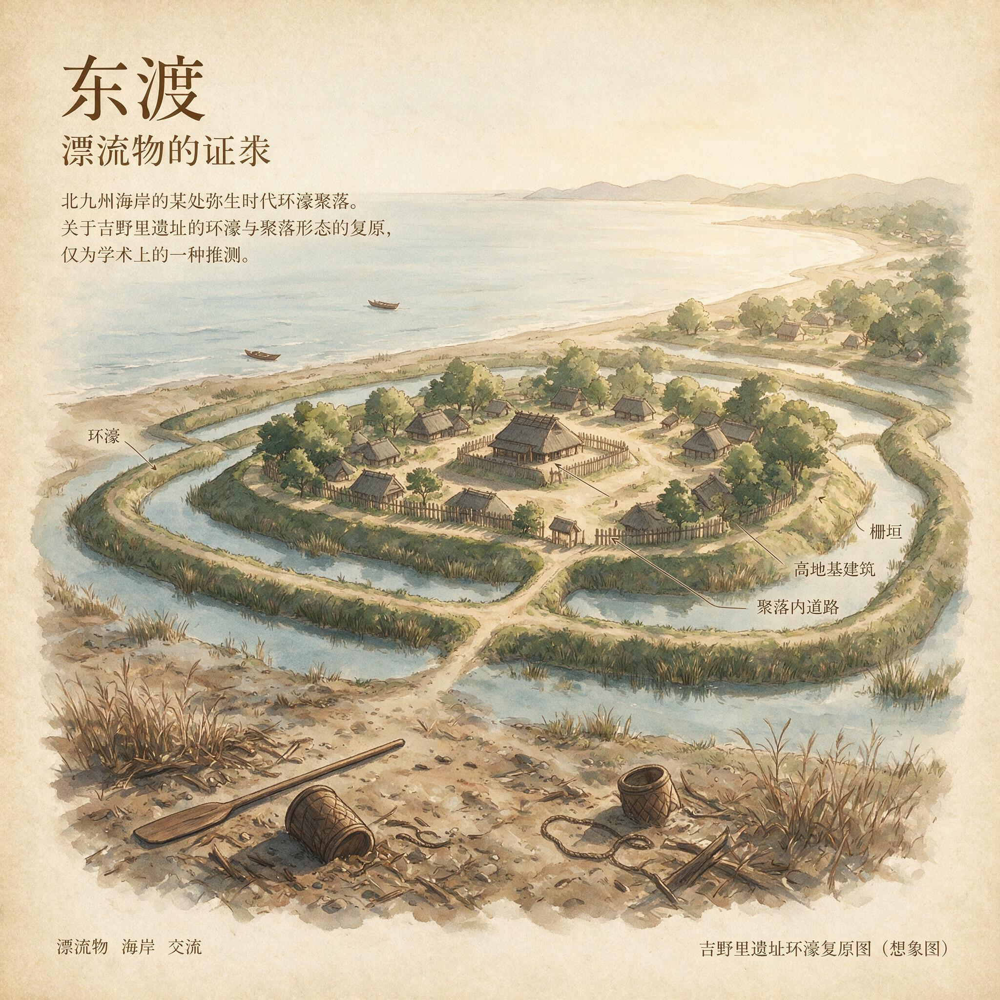

第 16 章
漂流物的证词
不过，在此书成书之前，8世纪成书的日本最早的史书《古事记》和《日本书纪》虽然记载了秦人移民日本的情况，却完全没有提及徐福其人。这一缺席不是偶然的疏漏。当编撰者太安万侣在元明天皇的敕命下，于和铜五年（公元712年）编成《古事记》时，他收录了从神代到推古天皇的诸多传承，其中不乏来自大陆的渡来人故事。
弓月君率领秦人归化、阿知使主携汉人东渡——这些移民叙事被仔细地编织进大和朝廷的建国神话中，成为王权正统性的重要支撑。但徐福的名字不在其中。
一个世纪后成书的《日本书纪》同样保持沉默。这不是遗忘。这是选择。因为徐福的故事，无法被纳入“归化”的框架。司马迁在《史记》中记载他最终抵达“平原广泽”，并“止王不来”，这是一个自立为王的独立叙事，与渡来人的归化逻辑相悖。日本最早的史书选择沉默，恰恰说明：在8世纪的史家看来，徐福不是一个需要被整合的移民，而是一个无法归类的悬置存在。
要理解这一选择的含义，需要从那些被海水浸泡过的物质碎片中寻找线索。当一支由帝国意志驱动、承载着明确政治使命的庞大船队从琅琊港消失于东海之后，它留给身后大陆的是一个巨大的信息黑洞。司马迁在《史记》的《淮南衡山列传》中，保留了徐福向秦始皇描述海上遭遇“海神”、对方索求童男童女作为见面礼的说辞，也记载了他最终抵达“平原广泽”并“止王不来”的结局，却无法填充那中间漫长的海上历程与最终的物理归宿。
那些登上楼船的人，那些被装进船舱的粮食、种子、工具和典籍，那些被割下的头发和投向海中的祭品，全部消失在秦始皇二十八年之后某个无法确定的日期。没有任何直接的文字返回大陆。没有信使，没有军报，没有幸存者的口述被记录在案。
伍被在淮南王面前讲述的那个故事，已经是事件发生近百年后的转述，其间的空白由推测、传闻和政治需要填充。秦廷需要的是一份有结果的航海报告——到达了哪里，获取了什么，是否可以重复——但海洋拒绝交还这样的报告。
海洋交还的，是另一些东西。在朝鲜半岛南部的全罗南道海岸，二十世纪七十年代的农田改造工程中，一位农民在泥炭层下发现了一块残破的木板。木板长约一米二，宽约三十厘米，厚度不均匀，边缘有明显的断裂痕迹。它不是被砍断的，而是被某种巨大的力量从某个更大的结构上撕裂下来的。
当地博物馆的工作人员后来对这块木板进行了初步鉴定，发现它的材质是栎木——一种硬质阔叶木，不适合当地造船传统中常用的松木或杉木，却与秦代船舶建造中常用的耐水硬木选材习惯相符。更引人注意的是木板一侧保留的加工痕迹：一个榫槽的残段，截面呈规整的矩形，槽壁平整，底部有凿具反复锤击后留下的阶梯状痕迹。这种痕迹，对于熟悉秦代官营手工业的人来说，并不陌生。
秦统一六国后，建立了空前庞大的器物生产体系。从兵器到量器，从瓦当到车轴，每一类产品的规格、工艺和质检标准都被写入律令，由工师、丞、啬夫层层监督执行。在湖北云梦睡虎地秦墓出土的《秦律十八种》中，关于官营作坊的律文明确规定了产品的规格容差、工人的劳动定额以及不合格产品的追责程序。其中《工律》一条规定：“为器同物者，其小大、短长、广亦必等。”这一原则不仅适用于金铁器物，也适用于木材加工。
在秦咸阳宫遗址、秦始皇陵兵马俑坑以及各地秦代遗存中出土的木质构件上，榫卯的加工精度常常达到惊人的一致——同一批次的榫头与榫槽可以在不同的构件间互换使用，而不需要额外的修整。这种标准化不是偶然的工艺习惯，而是帝国行政体系对器物生产施加的强制规范。工师监督每一道工序，丞核验每一批产品，啬夫保管每一份记录。不合格的产品会被追责，工师和工匠的名字会被刻在产品上，成为追溯的依据。
那块在全罗南道泥炭层中发现的栎木残板，其榫槽的加工精度与秦代官营作坊的标准具有可比性。槽口宽度与深度的比例、凿痕的走向与间距、以及木材表面残留的防蛀处理痕迹——一种用桐油与石灰混合的涂料，在秦代船舶建造中已有应用——这些细节叠加在一起，指向一个明确的来源：这块木板很可能来自一艘按照秦代官营标准建造的大型船只。
但它不能证明那就是徐福船队的遗存。它能证明的，只是曾经有一艘秦代标准的大型船只，在某个时间点，出现在朝鲜半岛南部的海域，并且在风暴或触礁中解体。
它的残骸被海流携带，沿着朝鲜半岛西海岸向南漂流，最终被潮水推入一处河口，沉入泥滩，被时间和沉积物层层掩埋。直到两千多年后，一位农民的锄头将它重新带回地面。
这艘船可能是徐福船队的一部分。也可能属于稍晚或稍早的航行者。秦汉之际，燕、齐、赵之地的沿海居民，为逃避战乱和徭役，曾有多次自发出海的记录。《后汉书·东夷列传》记载：“陈胜等起，天下叛秦，燕、齐、赵民避地朝鲜者数万口。”这数万口人不可能全部经由陆路穿越辽东，其中相当一部分必然选择海路。他们使用的船只，很可能也是秦代官营或民间造船的产物，在形制与工艺上与徐福船队的楼船大同小异。
海洋不区分这些。它将所有的残骸搅碎、混合、重新分配，不分官船与民船，不分求仙与逃难，不分帝国意志与个人求生。它只交出碎片，而拒绝交出碎片背后的故事。
另一类证词来自陶片。在日本列岛西部，从九州北部到本州西端的山口县沿海，考古工作者在弥生时代中晚期的遗址中，陆续发现了少量明显不属于本地陶器传统的残片。
这些陶片的胎土呈灰褐色，含砂量较高，烧成温度偏低，器表有绳纹或弦纹装饰——特征与日本弥生陶器迥异，却与同时期中国山东半岛沿海地区的陶器极为相似。其中一片最引人注目的残片，出土于福冈县一处弥生时代聚落遗址的垃圾层中。
它是一口陶罐的肩部残片，长约八厘米，宽约五厘米，器表磨光，胎土中掺有细碎的蚌壳末——这是齐地沿海陶器的典型工艺，目的是增加陶器的耐热性，防止在炊煮时开裂，在胶东半岛的考古遗存中多有发现。
在残片的内侧，靠近口沿的位置，有一个刻划的符号。它只有三笔：一横，一竖，再一横，构成一个类似“工”字的形状。刻痕浅而直，边缘毛糙，显然是在陶坯未干时用竹签或骨签随手刻下的。
这个符号可能是“工”字。在秦代文字中，“工”是常见的部首，也是官营手工业的标记之一。秦代官营作坊的产品，按照规定必须刻上制造者的信息——“物勒工名，以考其诚”——包括工师、丞和具体工匠的名字。在出土的秦代砖瓦、铜器和兵器上，这样的刻铭比比皆是。
如果这片陶片上的刻划确实是“工”字，那么它可能意味着这件陶器曾经是秦代官营作坊的产物，作为船上的炊具或储水器被携带出海。但“工”也可能只是工匠随手刻下的一个记号，没有任何官方含义。在齐地沿海的民间制陶传统中，工匠在陶坯上留下简略记号的做法并不罕见。这些记号可能是工匠个人的标记，可能是窑口的符号，甚至可能只是烧制前为了识别归属而做的临时标记。
在秦帝国严密的器物管理体系中，官营产品的刻铭通常更为规范，往往包含地名、官署名和工匠名，如“琅琊工官”“少府工室”等完整格式。一个孤立的“工”字，不足以构成官方标记的可靠证据。
更为微妙的是，即便这个“工”字确实是秦代官营的标记，它也不能证明这件陶器来自徐福的船队。秦军东征时携带的军需物资，沿海郡县日常转运的官用器物，甚至逃亡者从官府仓库中带走的生活用具——都可能留下类似的标记。
海洋将这片陶片送到日本海岸，却不能告诉后人，它是在何等情境下落入水中的，是随船沉没，还是被故意丢弃，抑或是某个幸存者带上岸后最终破碎。
还有一类更为沉默的证词：人骨。在日本山口县土井滨遗址，考古工作者在二十世纪五十年代发掘出一批弥生时代的人骨。这批人骨的形态特征与同时期日本列岛其他地区的人骨存在显著差异——他们的身高更高，面部轮廓更平，四肢骨骼更粗壮，颅骨形态更接近东亚大陆的居民。在随后的几十年中，类似的“渡来人”骨骼在九州北部和本州西端的多个遗址中陆续被发现，构成了弥生时代日本列岛人口构成变化的实物证据。
这些骨骼的同位素分析提供了更为精确的信息。稳定同位素碳十三与氮十五的比值，可以反映个体生前的饮食结构。不同的植物类型——如C3植物（水稻、小麦）和C4植物（粟、黍、高粱）——在光合作用中固定碳同位素的方式不同。C3植物的碳同位素比值偏低，C4植物偏高，这种差异会通过食物链进入人体骨骼，在胶原蛋白中留下可检测的化学印记。
土井滨遗址中几具“渡来人”骨骼的碳同位素比值显示，其生前的饮食中C4植物的比例明显偏高，远超过同时期日本列岛居民以水稻（C3植物）为主的饮食结构。这种高C4比例的饮食结构，正是中国北方沿海地区——特别是齐地——的典型特征。齐地地处黄河下游，沿海平原土壤多沙质，适合种植耐旱的粟和黍，而非需水量大的水稻。在战国至秦汉时期，齐地居民的主食以粟为主，辅以麦、豆，水稻虽有种植，但比例不高。《史记·货殖列传》记载齐地“膏壤千里，宜桑麻”，其农业结构中旱作农业占据主导地位。土井滨遗址中那些骨骼的碳同位素信号，与齐地沿海的饮食结构高度吻合。
这些人，很可能来自齐地。但他们是否来自徐福的船队？同位素只能告诉我们一个人在哪里长大，却不能告诉我们他是如何来到日本海岸的。他可能是徐福船队中某个童男或童女的后代，在异乡的土地上终老，骨骼中忠实地保留着故乡的饮食印记。他也可能是稍晚的秦末汉初移民，在战乱中乘船渡海，在异乡开垦新的土地。
他甚至可能来自更早的迁徙——在秦统一之前，齐地与朝鲜半岛、日本列岛之间的海上往来已有数百年历史，商人与渔民的海上网络远比帝国官僚的想象更为绵密。
日本列岛的弥生时代，本身就是一个由大陆移民持续涌入推动的文化转型期。从公元前三世纪开始，来自朝鲜半岛和中国大陆的移民陆续抵达日本，带来了水稻种植技术、金属工具和新的社会组织形式。这些移民的规模、批次和来源地各不相同，构成了一个复杂的、持续数百年的移民潮。徐福船队，即便确实抵达了日本，也只是这个漫长移民过程中的一个片段，而非全部。
这些漂流物——船板、陶片、人骨——共同构成了一个沉默的证词集合。它们不是徐福事件的直接证据，更不是“徐福到达日本”的证明。它们不证明成功，也不证明失败。它们不证明骗局，也不证明英雄旅程。

它们只证明一件事：曾经有一支船队，或几支船队，或许多支船队，装载着按照秦代官营标准建造的船只、按照齐地沿海工艺制作的陶器、以及以齐地沿海饮食结构长大的人，在秦汉之际的某个时间点，从中国大陆东部海岸出发，驶入东海，并且其中一部分最终抵达了朝鲜半岛南部和日本列岛西部。海洋交还的这些碎片，其意义恰恰在于它们的破碎。
秦帝国的行政体系，是一个建立在完整信息基础上的体系。从户籍到田亩，从仓廪到厩苑，从徭役到赋税，每一件事都必须被记录、统计、上报和核验。里耶秦简中那些密密麻麻的木牍，帝国官吏们不厌其烦地记录着每一个数字、每一个日期、每一个名字，正是因为这套体系要求一切都在掌控之中，一切都可以被追溯和问责。
当秦始皇派遣徐福出海时，他期待的回报不可能是一堆破碎的船板和无法辨认的陶片。他期待的是仙药，是到达的确认，是帝国意志在海洋彼岸的延伸。
即便不能如愿，他也需要一份明确的失败报告——船沉了，人死了，失败了——这样帝国就可以将这件事归档，从账目中注销，从记忆中抹去。但海洋不给这些。海洋不给成功，也不给失败。它只给一些碎片，一些需要被解读、却无法被确证的物质痕迹。这些痕迹无法被纳入帝国的行政分类系统——它们既不是“功”也不是“过”，既不是“到达”也不是“失踪”，既不是“完成”也不是“未完成”。它们是一种帝国叙事无法消化的“非结果”。
这就是为什么，在秦帝国的官方记载中，徐福事件最终只能以悬案的形式存在。
司马迁在《史记》中留下了几个相互矛盾的版本——徐福“得平原广泽，止王不来”；徐福因“大鲛鱼”所阻而失败；
秦始皇“东至荣成山，登之罘，照海，而望见徐福船”——这些版本之间没有统一的叙事逻辑，因为司马迁本人也无法从他所见到的材料中拼凑出一个完整的故事。
他只能将这些碎片并列，让后人自己去判断。而这些碎片之所以存在，本身就是一个值得追问的问题。
在秦帝国的档案体系中，徐福事件的记录应该远比今天我们看到的更为丰富。秦始皇派遣徐福时，涉及的文书包括：征发童男童女的诏书、调拨楼船和物资的少府令、沿途郡县分摊粮食和人力的账目、以及船队出发前核验各项准备工作的报告。这些文书，在秦代曾经被保存在少府、琅琊郡守府乃至秦始皇东巡的行宫中，构成了一套完整的行政档案。
但秦末的战火摧毁了这一切。项羽入咸阳时，“烧秦宫室，火三月不灭”，秦帝国的中央档案几乎全部化为灰烬。郡县一级的文书，也在随后的楚汉战争中大量散失。徐福事件的行政记录，在司马迁的时代已经所剩无几。他只能依靠伍被的口述、齐地的传说和一些零散的文书，拼凑出一个模糊的轮廓。
在那个轮廓中，徐福是一个狡猾的方士，利用秦始皇的迷信骗取资源，最终在海外自立为王。那个轮廓里没有船上的风暴，没有甲板上的祭坛，没有那些被割下的头发。那些东西，不在帝国的叙事框架之内。但海洋记得。海洋以它自己的方式，保存了帝国叙事无法容纳的东西。
那些按照秦代官营标准建造的船板，在海底沉睡了千年，榫卯之间依然保留着工师监督下的凿痕。那些刻着模糊符号的陶片，曾经是某个船工或童女手中的饭碗，在异乡的聚落中破碎后被丢弃在垃圾堆里。那些骨骼中保存着C4植物同位素信号的人，在异乡的土地上终老，他们的牙齿因为在童年和少年时期食用齐地沿海的粟米而留下了不可磨灭的化学印记。
这些东西，不是帝国叙事的一部分。它们不在任何一份诏书、账册或军报中。它们散落在沿海的泥炭层中、聚落遗址的垃圾坑里、人骨的同位素比值中，沉默地等待着被重新发现。
而当它们被重新发现时，它们提供的不是答案，而是更多的问题。它们不能告诉我们徐福是否到达了日本。它们只能告诉我们，在秦汉之际，有一批按照秦代官营标准建造的船只，从中国东部海岸出发，驶入了东海。其中一些船只，或它们的残骸，最终抵达了朝鲜半岛南部和日本列岛西部。这些船只上的人，可能活了下来，融入了当地社会，他们的后代继续在那里生活，骨骼中逐渐混入了新的饮食信号。
也可能没有活下来，只留下一些破碎的船板和陶罐，作为他们曾经存在的唯一证据。这些漂流物，是对帝国叙事的一种沉默的抵抗。帝国要求一个有结果的报告，海洋却只交还一些无法拼合的碎片。帝国要求一个可以归档的结局——成功、失败或背叛任选其一——海洋却拒绝在帝国的分类体系中选择任何一项。它只是缓慢地、持续地，将这些碎片逐一冲上海岸，在两千年的时间里，让它们被不同的人发现、解读、争论、遗忘，然后重新发现。
而帝国的回应，则是在文本中重新构建一个可以理解的故事。《古事记》和《日本书纪》对秦人移民的记载，恰恰是这种文本重构的一部分。弓月君率领秦人归化的故事，将渡来人纳入大和朝廷的建国叙事，赋予他们一个明确的政治位置——他们是归化者，是技术携带者，是天皇治下的臣民。这个叙事清除了移民过程中的偶然性、暴力和断裂，用“归化”这个优雅的词汇覆盖了那些在海难中破碎的船板、在异乡海滩上被丢弃的陶罐、以及那些骨骼中保留着故乡饮食信号却终老异乡的人。
在朝鲜半岛南部发现的这块栎木残板，其榫卯加工痕迹所透露的信息，比单纯的木材种类更为具体。
秦代官营造船作坊的榫卯工艺，有一套严格的工序流程。首先是选材——栎木、楠木、樟木等硬木因其耐水性和抗蛀性被优先用于船舶的水下部分，而松木、杉木等软木则用于甲板和上层建筑。其次是开榫——工匠使用青铜或铁制的凿、铲、锯，按照预先划定的墨线，在木材上开出榫眼和榫头。
秦代官营作坊的标准化，不仅体现在成品的尺寸规格上，也体现在加工工具的形制上。在秦始皇陵出土的修陵人工具中，凿的刃宽有一寸、八分、六分等不同规格，每种规格对应不同的加工需求。这种工具的标准化，使得不同工匠开出的榫槽在宽度和深度上能够保持高度一致。
全罗南道残板上的榫槽，其底部保留的阶梯状凿痕，正是这种标准化工艺的副产品。秦代工匠在开凿深槽时，不是一次性凿出完整深度，而是分层锤击——先用宽刃凿开出粗坯，再换窄刃凿逐层加深，每层进深约二至三分。这种“分层开槽法”在秦代官营木作中是一种通行的工艺规范，其目的是防止木材在深凿过程中开裂，同时也便于工师在每一层完成后进行检查和校正。残板上保留的凿痕间距，与秦代官营作坊的典型工艺参数吻合。
但这块木板同样不能证明它就是徐福船队的遗存。它能证明的，只是秦代官营造船技术曾经抵达过朝鲜半岛南部海域。至于这艘船是奉帝国之命东渡求仙，还是被逃亡者劫持出港，抑或是在秦末战乱中被溃兵抢夺后仓皇出海，木板不会说。它只是一块木板，在海底沉睡了两千年，榫槽里填满了泥炭和微生物的遗骸，木质细胞壁在厌氧环境中缓慢分解，只留下一个模糊的形状，供后人猜测。
那片刻有“工”字残痕的陶片，其文字解读还有另一层需要审慎对待的问题。在秦代文字体系中，“工”字固然可以指官营手工业，但也是“左”“巧”“式”等字的组成部分。如果残片上的刻划只是某个完整文字的一部分——比如一个“左”字的偏旁，或者一个“巧”字的起笔——那么它的含义就完全不同了。“左”在秦代官制中是常见的职官名，如“左丞相”“左弋”“左更”，也可能是“左工”或“左司空”等官署的简写。如果这片陶片上的刻划确实是“左”字的残笔，那么它可能指向一个更具体的官营机构。但残片太小，只有三笔，无法判断它是完整字符还是某个字的偏旁，更无法判断它是官方的规范刻铭还是个人的随意刻画。
这种不确定性，本身就是漂流物证词的一个隐喻。它们携带着信息，但这些信息总是残缺的、模糊的、可以多重解读的。它们像是一个被打碎的句子，只留下几个偏旁部首，让后人去猜测整句话的含义。
人骨同位素数据的解读，同样面临类似的困境。土井滨遗址中那些高C4比例的人骨，其饮食结构确实指向齐地沿海，但这并不意味着他们一定来自齐地。中国北方其他地区——如燕地、赵地——同样存在以粟为主的旱作农业结构，其居民的碳同位素信号与齐地居民高度相似。在秦末汉初的大规模移民潮中，从燕地、赵地沿海路逃亡朝鲜半岛和日本列岛的人口，其骨骼同位素信号将与齐地移民无法区分。
更复杂的是，饮食结构会随着迁徙而改变。一个人如果在齐地沿海度过了童年和少年时期，骨骼中C4植物的信号已经被固定下来，即使他后来迁徙到日本列岛，开始食用当地以水稻为主的食物，其骨骼中的碳同位素比值也不会完全改变——因为骨骼胶原蛋白的更新周期长达数年甚至数十年，早期饮食的信号会被部分保留。这意味着，土井滨遗址中那些高C4比例的人骨，可能反映的是他们少年时期的饮食结构，而非成年后在日本的饮食。他们可能已经在日本生活了很长时间，但骨骼中仍然保留着故乡的化学印记。这种印记，比任何文字记录都更为顽固，也更为沉默。
在朝鲜半岛南部沿海，类似的漂流物证据也在持续积累。全罗南道和庆尚南道的多处沿海遗址中，考古工作者发现了与秦代造船工艺相似的船板残片，以及胎土和烧制工艺与齐地沿海陶器相近的陶片。这些发现分布零散，时间跨度从公元前三世纪末延续到公元前二世纪中期，缺乏一个统一的考古学文化层可以将它们归入同一事件。
但它们共同指向一个事实：在秦汉之际，中国大陆东部沿海与朝鲜半岛南部、日本列岛西部之间的海上联系，比此前任何时期都更为密集和持续。这场海上移民潮的规模、频率和持续时间，远非徐福船队单次航行所能涵盖。徐福船队，如果确实存在，只是这场移民潮中的一个片段——一个被帝国叙事放大了的片段，因为它的背后有秦始皇的诏书和少府调拨的楼船，有被记录在史书中的船队规模和使命。
而那些没有诏书的船队，那些逃亡者、渔民、商人自发组织的航行，那些在风暴中沉没的船只和在海滩上建立的临时聚落，则被遗忘在历史的暗处，只有零星的物质碎片被海水冲上岸，成为它们曾经存在的唯一证据。
徐福的名字不在这个叙事中，因为徐福的故事无法被轻易归类。他不是归化者，他是奉帝国之命出海的使者。他不是技术携带者，他是求仙的方士。他不是天皇治下的臣民，他是“止王不来”的自主者。他的故事，如果被纳入《古事记》的叙事框架，将引入一个无法消化的元素——一个来自大陆的、独立的政治实体，一个在“归化”逻辑之外的存在。
所以《古事记》选择沉默。这不是不知道，而是不纳入。那些秦人移民被记载，因为他们的技术——养蚕、织布、筑堤——可以服务于大和朝廷的统治需要。他们的存在可以被归入“归化人”的范畴，成为天皇权威的佐证。但徐福，带着他的童男童女和庞大的船队，带着他的“止王不来”的自主性，无法被这个框架容纳。他的存在本身就是一个异数，提醒着后人：在帝国叙事的边缘，还有一些东西，无法被归类，无法被归档，无法被消化。
这一判断，在数百年后的中日文献中得到了印证。五代后周僧人义楚在《释氏六帖》中，首次从来华日僧宽辅处听到了明确指认日本为徐福目的地的说法，并记载“至今子孙皆曰秦氏”。这则信息表明，至迟到10世纪，徐福东渡日本、其后裔形成“秦氏”的传说已在日本本土流传，并通过僧侣交流进入了中国文人的视野。而在日本方面，直到14世纪，南朝重臣北畠亲房在《神皇正统记》中，才首次将徐福在熊野登陆定居的传说写入史书，并赋予其文化传播的正面意义，认为“孔子全经唯存日本矣”。这比《古事记》晚了六百多年。这漫长的沉默与迟到的接纳，本身就是一个值得深思的叙事选择。
展柜旁边的说明文字，简要介绍了弥生时代日本列岛与大陆之间的文化交流，提及了“渡来人”的持续涌入对日本社会转型的影响，也没有提及徐福。标签牌上留下的空白，不是疏忽，而是诚实。因为这片陶片，确实不能证明徐福。它只能证明，曾经有人从海的那一边来到这里，带来了按照齐地沿海工艺制作的陶器，在异乡的海岸上继续生活，直到陶罐破碎，被丢弃，被掩埋，被重新发现。至于那个人是谁，属于哪一支船队，怀抱着怎样的使命或恐惧，这片陶片不会说。它的沉默，就是它的证词。